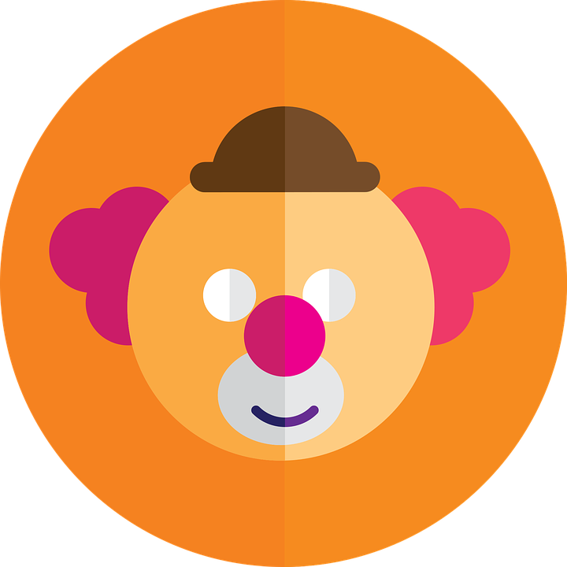

En el año 2006 a los 10 años empecé mi gusto por el ilusionismo, asistiendo a los primeros talleres de magia en la academia Boliviana de magia e ilusionismo con el mago Byron, desde ahi tuve la oportunidad de presentarme en distintos lugares como el teatro de cámara, casa de la cultura Modesta Sanjines, Teatro 6 de agosto
Llevo animación y magia solidaria a albergues, niños con cancer, carcel de mujeres y porsupuesto apoyando las actividades solidarias de mi ciudad La Paz- Bolivia.
Actualmente soy considerada como representante del país para competir en congresos internacionales de magia.
Más allá del espectáculo me considero feminista por defender los derechos de la mujer artista, luchando en contra del machismo.
Academia boliviana de magia e ilusionismo (miembros de FLASOMA & FISM-LA)
Premio
Segundo lugar
Magia de escena
Congreso con mas altura de latinoamerica "3600"
2017 La Paz Bolivia

SOY PAYASA
Desde nacimiento lleve al espectáculo en la sangre, gracias a que mi papá (oscar contreras- payaso cepillito fundador de segunda generacion de la AAMI asociacion de artistas del mundo infantil ) me inculco este bonito arte en el corazón y la mente
AAMI Asociacion de artistas del mundo infantil (cargo- secretaria de prensa y propaganda - mesa directiva 2017-2019)